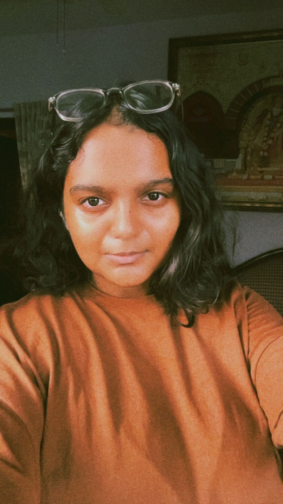

SCAN_COMPLETE [100%]
ABILITIES
▪ EXECUTION ORIENTED
▪ SYSTEM ARCHITECTURE
▪ PRODUCT BUILDING
▪ INFRASTRUCTURE CODE
NAME
VEDA
AGE
23
ROLE
AGNOSTIC CODER
INSTAGRAM
COMMS_LINK
If I say I’m a coder, does that mean I can solve all 2000+ LeetCode problems or become the world’s best engineer? No.
I’m someone who tries to make a product, a block, or a function work every day.
I work on execution. I like building systems, products, infrastructure, and code that actually works for businesses. I charge for my work.
I can help turn ideas into working software infrastructure with code.
> HIGHLY EXECUTION-ORIENTED AND RESULT-DRIVEN MINDSET.